Feudi Salentini.
La cantina della famiglia Varvaglione a Leporano, sul mar Ionio, a sud di Taranto.
01 · Quarta generazione
La famiglia Varvaglione.
Cosimo, Maria Teresa, Marzia, Angelo e Francesca Varvaglione portano avanti l'azienda, giunta alla quarta generazione.
02 · Vitigni autoctoni
La nostra filosofia.
Feudi Salentini produce vini dai vitigni autoctoni pugliesi per eccellenza: Primitivo, Negroamaro, Verdeca e Malvasia Bianca, usando tecniche di vinificazione moderne, con un occhio all'ambiente per salvaguardare la terra.
Coltiviamo vitigni autoctoni che offrono la loro piena espressione nei vini di Feudi Salentini.
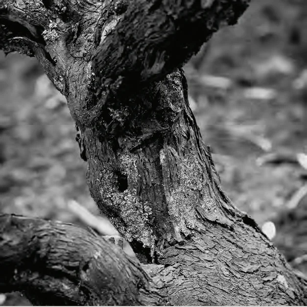
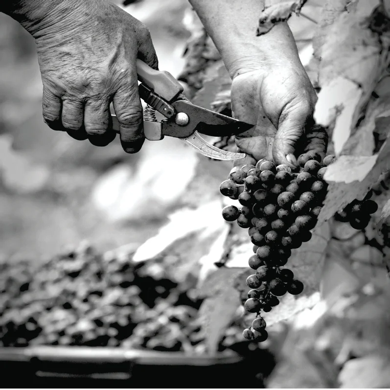
I vini di ogni vitigno.
03 · Il territorio
Il Salento, una terra divina.
Il Salento è ricco di castelli, di storia e di tradizioni. Feudi Salentini nasce qui, in una terra rinomata per il Primitivo di Manduria. I muretti a secco, gli uliveti secolari e il mare turchese fanno parte di uno scenario che dà vita a vino e olio.
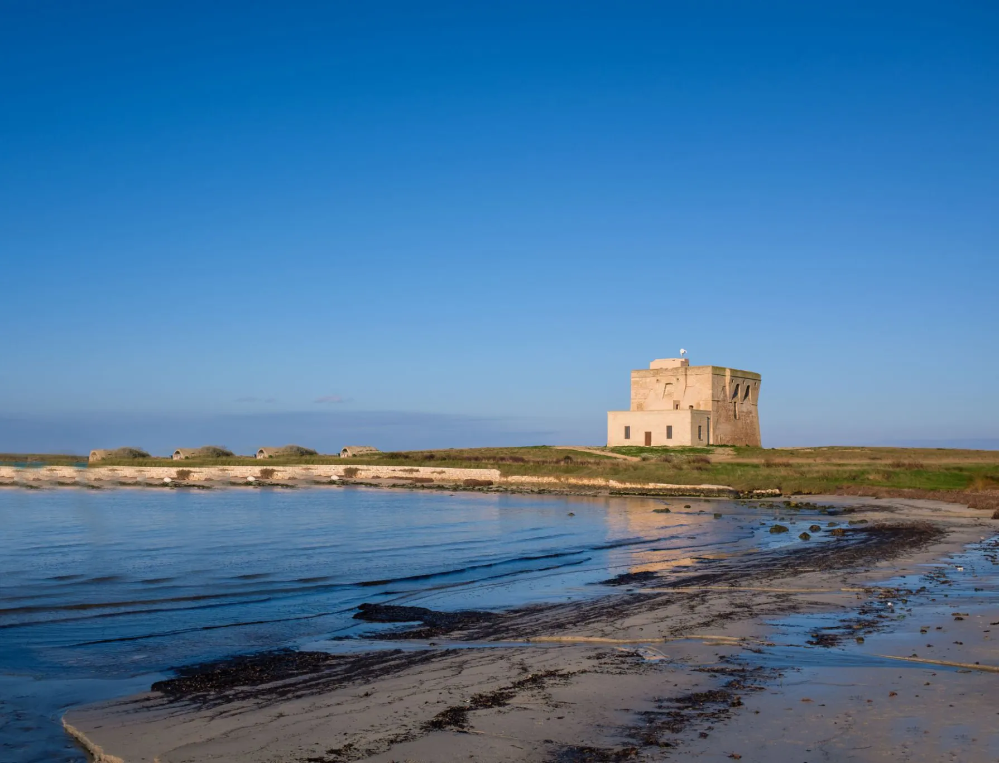
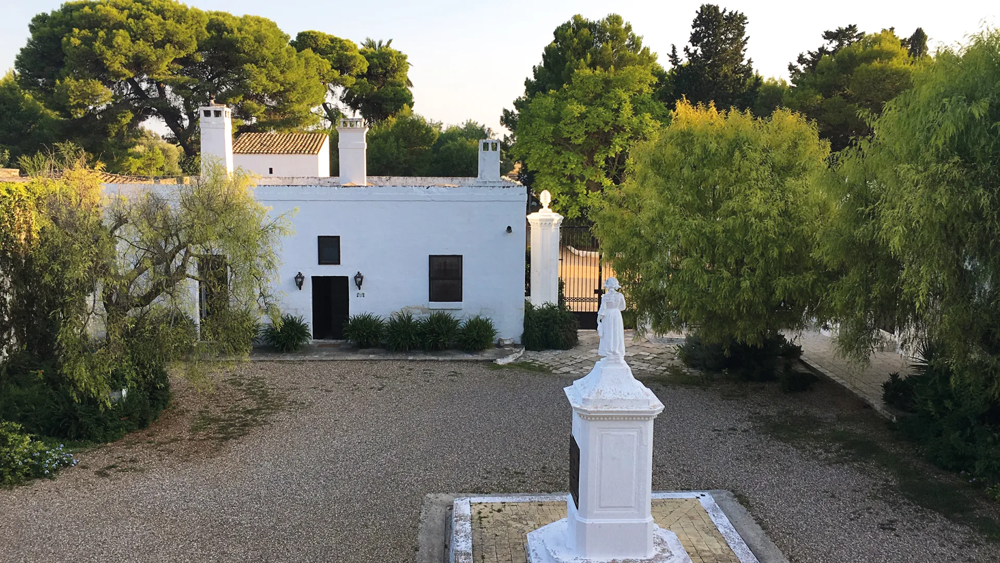
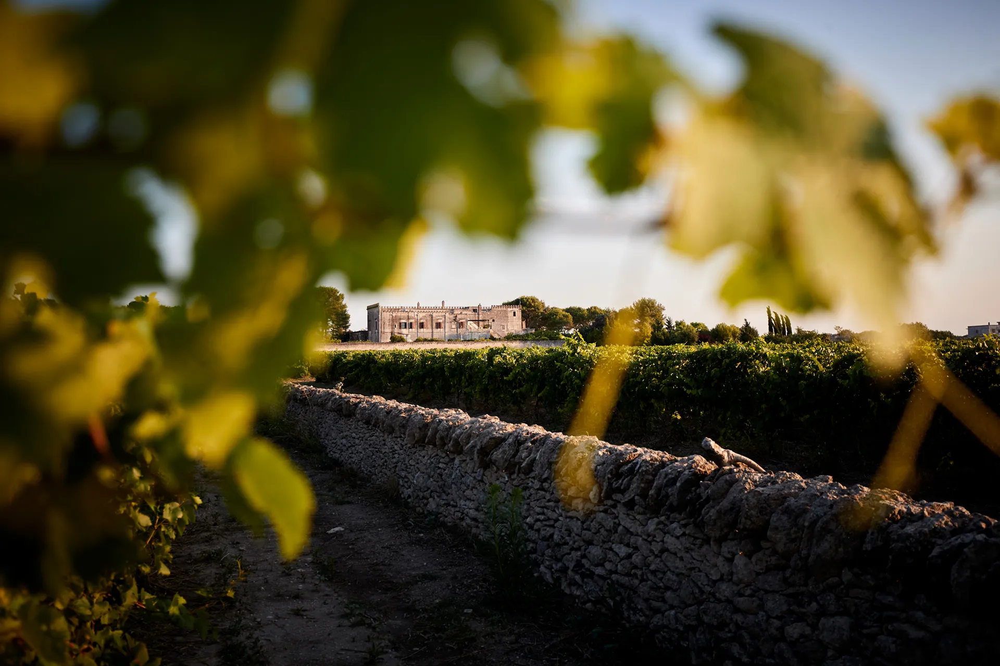
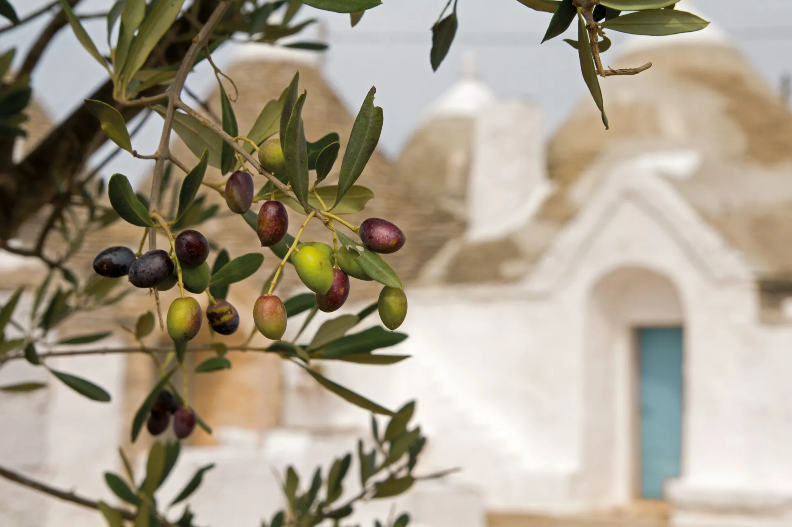
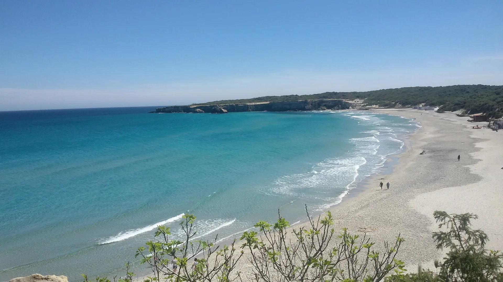
04 · Equalitas dal 2022
Sostenibilità.
Dal 2022 Feudi Salentini è certificata Equalitas, lo standard che valuta la sostenibilità ambientale, sociale ed economica delle aziende del vino.
- 2022
Certificazione Equalitas
Il 100% dei fornitori di vino è certificato Equalitas e sostenibile. La certificazione guarda anche alle persone: condizioni di lavoro eque e progetti sociali e culturali sul territorio.
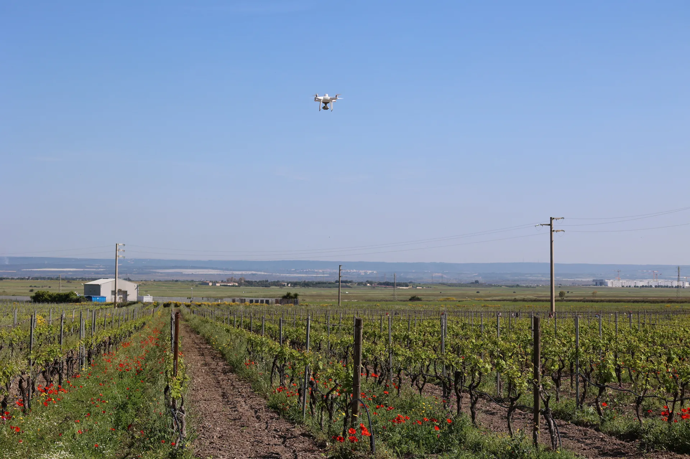
- 2025
Impronta di carbonio e impronta idrica
Calcolate per la prima volta nel 2025 sui dati del 2024, secondo le norme UNI EN ISO 14064:2018 e ISO 14046:2014. L'obiettivo è misurarle negli anni e ridurre le emissioni.
- 100%
Tappi Nomacorc
Tutte le bottiglie sono chiuse con tappi Nomacorc, che aiutano a prevenire ossidazione e riduzione del vino. I Nomacorc Green sono fatti con polimeri vegetali ricavati dalla canna da zucchero.
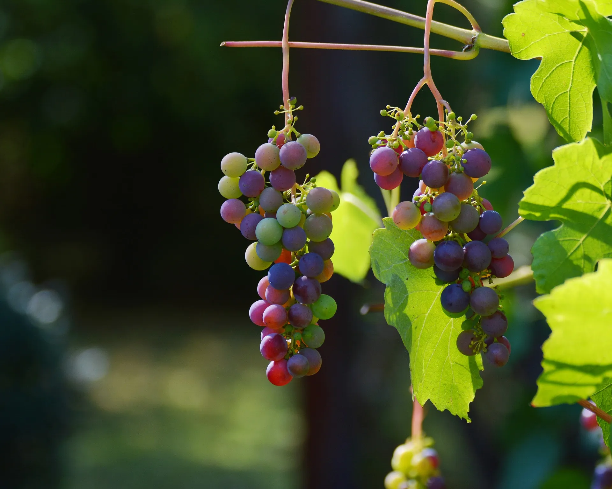
- 3 Cuori
Persone
Nel 2025 il turnover è stato zero e i contratti a tempo indeterminato sono saliti del 75%. Dal 2025 c'è il Piano Welfare 3 Cuori, per i collaboratori e le loro famiglie.
- WWF
Territorio
Nel 2025 Feudi Salentini ha fornito attrezzature al WWF di Taranto per la tutela dell'ambiente. Sostiene le parrocchie e le associazioni no profit della zona.
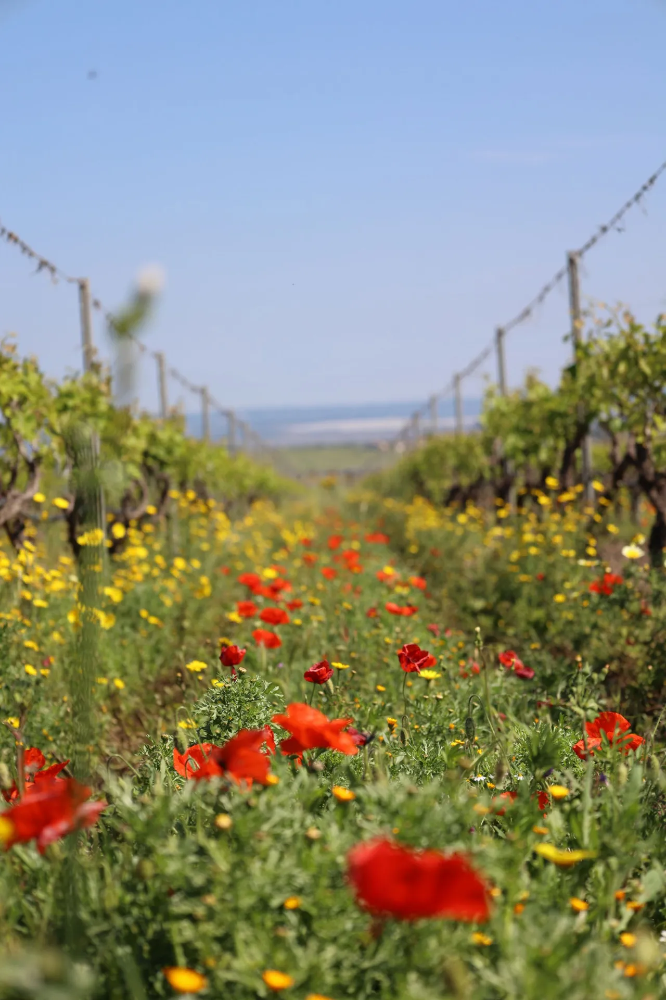
- GRI
Trasparenza
Ogni fase della produzione è documentata: di ogni bottiglia si conoscono l'origine e il percorso. La rendicontazione si sta allineando agli standard del Global Reporting Initiative.
- 3
I prossimi obiettivi
- Comprare solo da fornitori certificati per la sostenibilità.
- Ricalcolare ogni anno l'impronta di carbonio e quella idrica.
- Sostenere le associazioni che lavorano per l'ambiente.
05 · Concorsi internazionali
65 riconoscimenti.
06 · Leporano (TA)
Vieni a trovarci.
Feudi Salentini srl, Via Esterna Talsano, 36, 74020 Leporano (TA). Telefono +39 099 5315370, info@feudisalentini.com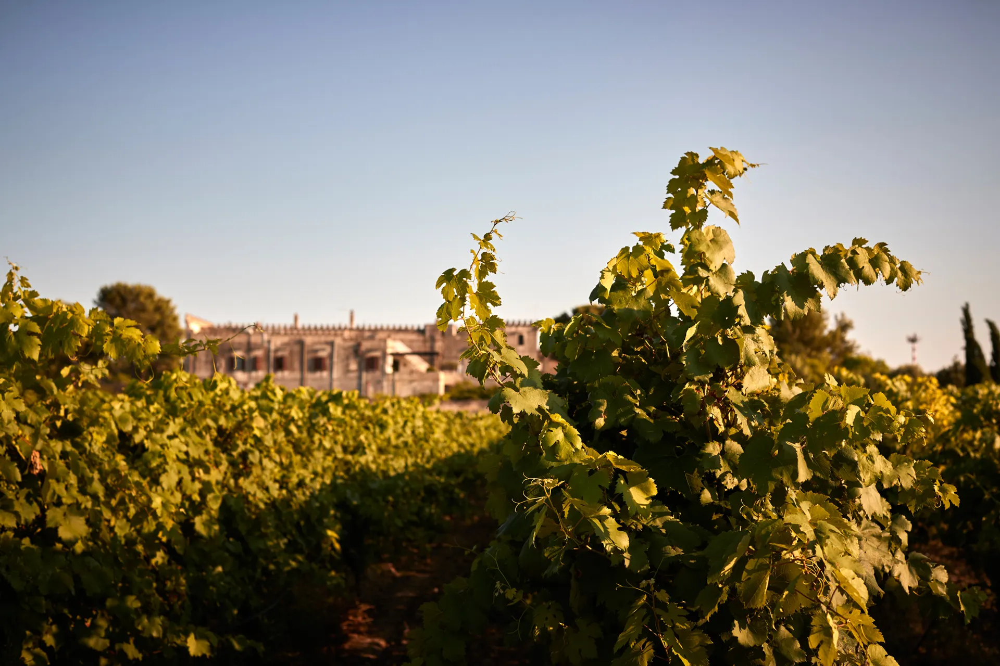